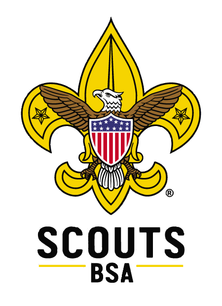

Cub Scouts is for
girls and boys
, from kindergarten age to fifth grade. For more information click here!
 Scouts BSA is for
girls and boys
aged 11 to 17 years old. For more information click here!
 Cub Scouts is for girls and boys, from kindergarten age to fifth grade. For more information click here!
Cub Scouts is for girls and boys, from kindergarten age to fifth grade. For more information click here!